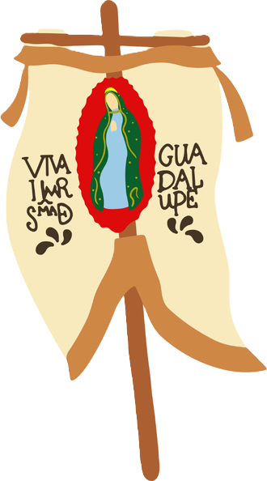

- En el Acta de Independencia firmada el 28 de septiembre de 1821, se establece que México sería reconocido como Imperio. Luego de la caída del emperador Iturbide (1823), el acta fue renovada y en lugar de decir "Imperio", se estableció el término "República". Por eso México cuenta con dos actas de independencia.
- Ni Guerrero ni Victoria firmaron el Acta de Independencia. Los firmantes fueron los criollos cercanos a Iturbide.
- Miguel Hidalgo no tocó la "Campana de la Independencia", quien realmente tocó la campana aquel día fue José Galván, el campanero de la parroquia, mientras Miguel Hidalgo llamaba desde la entrada de la parroquia a toda la población.
- Hubo una guerra de vírgenes en la Independencia, por un lado la virgen de Guadalupe, enarbolada por Miguel Hidalgo, fue llamada María Insurgente, mientras que el Virrey Venegas nombró a la virgen de los Remedios, generala de sus tropas.
- Ignacio Allende trató de envenenar a Miguel Hidalgo en varias ocasiones, después de negarse a tomar la Ciudad de México y autodenominarse "Alteza Serenísima". Un plan para envenenar a Hidalgo fue cuando Allende repartió tres dosis de veneno, que jamás llegaron a la boca del Cura Hidalgo porque siempre estaba bien protegido.
